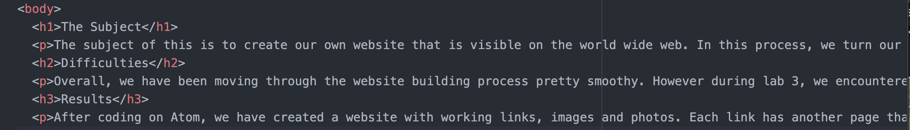
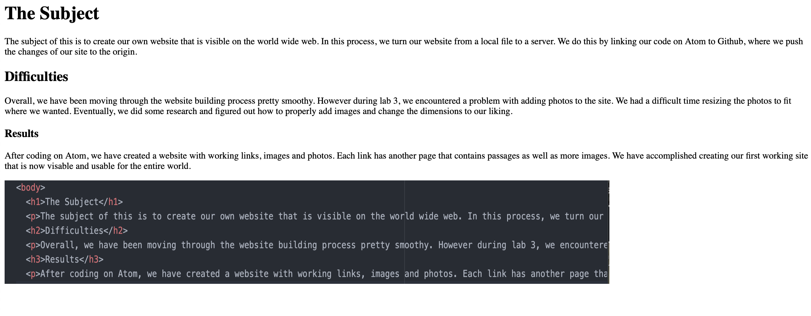

The subject of this is to create our own website that is visible on the world wide web. In this process, we turn our website from a local file to a server. We do this by linking our code on Atom to Github, where we push the changes of our site to the origin.
Overall, we have been moving through the website building process pretty smoothy. However during lab 3, we encountered a problem with adding photos to the site. We had a difficult time resizing the photos to fit where we wanted. Eventually, we did some research and figured out how to properly add images and change the dimensions to our liking.
After coding on Atom, we have created a website with working links, images and photos. Each link has another page that contains passages as well as more images. We have accomplished creating our first working site that is now visable and usable for the entire world.
 